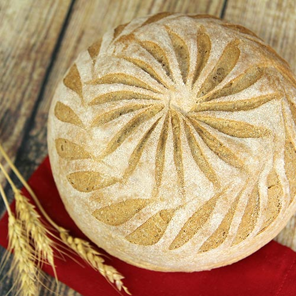
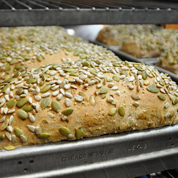
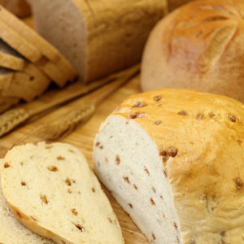
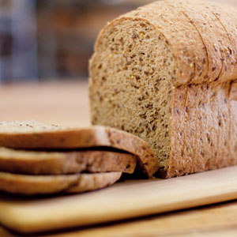
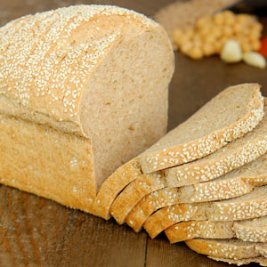
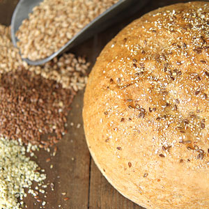
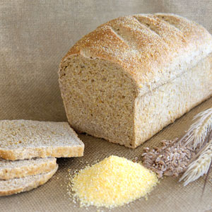

| Our favorite breads |
|---|
| Honey Whole Wheat |
Our signature and most popular bread is a perfect blend of five pure ingredients – freshly ground, flavor-rich, 100% whole wheat flour, pure honey, filtered water, salt, and yeast. |
| Dakota |
Sunflower, pumpkin, and sesame seeds are generously kneaded into our honey whole wheat dough for a crunchy, hearty, and flavorful bread. |
| Cinnamon Chip |
Enjoy the sweet goodness of cinnamon chips in every bite. Flour, cinnamon chips, honey, and ground cinnamon. Makes a heavenly French toast. |
| High 5 Fiber |
Freshly ground 100% whole wheat flour, honey, flax seeds, oat bran, millet, sunflower seeds, and wheat bran. |
| Our newest breads |
|---|
| Hummus Bread |
Hummus as bread! This awesome bread is made with only fresh, simple ingredients: chickpeas, freshly ground 100% whole wheat flour, sesame seeds, garlic, cumin, cayenne pepper, olive oil, honey, salt, yeast, and water! It makes an incredible sandwich bread, or try it toasted with fresh avocado. |
| Superfood Bread |
A 100% whole grain bread made with only super simple, nutritious ingredients: quinoa, freshly ground whole wheat flour, flax, oat bran, hemp seeds, extra virgin olive oil, honey, salt, yeast, and water. |
| Anadama |
A tantalizing combination of buttermilk-soaked coarse cornmeal, whole wheat and white flours, honey, and molasses. Soft and fluffy with the sweet crunch of corn. It is perfect sandwich bread and makes a wonderful toast! |